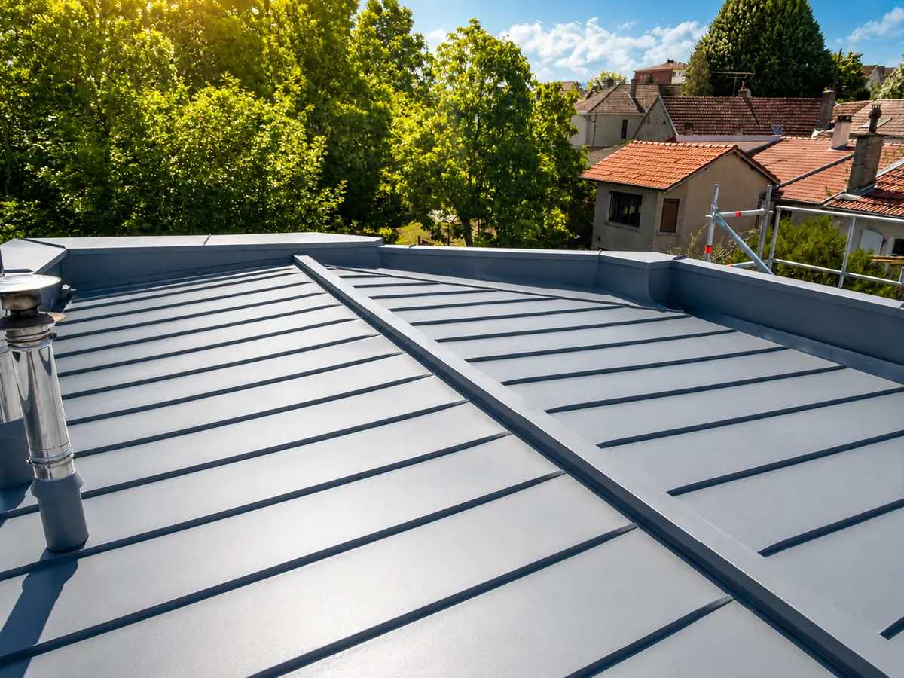

Couverture zinc · Vincennes
Une toiture zinc ne se résume pas à une feuille de métal.
La couverture doit former une surface continue, accompagner la géométrie du toit et évacuer l’eau sans point de retenue. Les lignes de joint, les relevés, les rives, les noues et les raccords aux souches font partie du même ouvrage. Une fuite peut provenir d’une zone éloignée de la trace visible, d’où l’importance d’examiner le parcours de l’eau et l’état général de la toiture.
À Vincennes, un projet peut concerner un pan complet, une extension, un terrasson, une lucarne ou seulement la reprise d’un point singulier. Le choix du détail dépend toujours du support, de la pente, de la ventilation, des dimensions et des jonctions avec les matériaux voisins.

Joint debout, tasseaux et autres formes de couverture
Le joint debout assemble les feuilles par des relevés continus sertis. Ce profil dessine des lignes verticales régulières ; il demande une préparation précise des rives, du faîtage et des traversées. D’autres mises en œuvre peuvent convenir selon la pente ou l’architecture. Le terme « zinc à tasseaux » désigne une autre façon de structurer et de protéger les jonctions entre feuilles.
La décision ne se prend pas uniquement sur l’aspect. Il faut tenir compte de la forme du toit, de la longueur des rampants, des mouvements du métal, de la ventilation sous couverture et des recommandations applicables au système retenu. Un examen du chantier permet d’éviter les solutions théoriques qui ne correspondent pas au bâtiment.
Rénovation : repérer ce qui doit réellement être repris
Avant de remplacer une couverture, il convient d’observer les signes disponibles : déformation, ouverture d’un joint, corrosion, raccord dégradé, stagnation, fuite après pluie ou intervention ancienne. L’étendue de la reprise dépend de l’origine du désordre et de l’état des zones adjacentes. Une réparation localisée peut être envisageable dans certains cas ; ailleurs, la continuité de la couverture ou le support impose un périmètre plus large.
Les travaux de zinc sont indissociables de la zinguerie : une noue, un chéneau, un abergement de cheminée ou une naissance de gouttière participent à l’étanchéité et à l’évacuation. Pour ces ouvrages, consultez la page zingueur à Vincennes et son guide dédié à la gouttière en zinc.
Fenêtre de toit et couverture zinc
L’ajout ou le remplacement d’une fenêtre de toit touche directement la couverture. L’ouverture, le chevêtre, le raccord périphérique et l’écoulement de part et d’autre doivent être compatibles avec la couverture existante. Retrouvez les points de vigilance sur la page dédiée pose ou remplacement de Velux à Vincennes.
Une demande claire facilite le premier échange
Pour discuter de votre projet, précisez la commune et l’adresse du chantier, le type de toit, la présence d’une infiltration ou votre objectif de rénovation. Si vous disposez de photos prises depuis un emplacement sûr, elles peuvent aider à comprendre le contexte. La visite reste nécessaire pour définir une méthode et établir un chiffrage adapté.
La couverture zinc demande une pose adaptée à la pente, aux relevés et aux raccords. Découvrez aussi nos conseils sur la rénovation de toiture et la réparation de fuite.